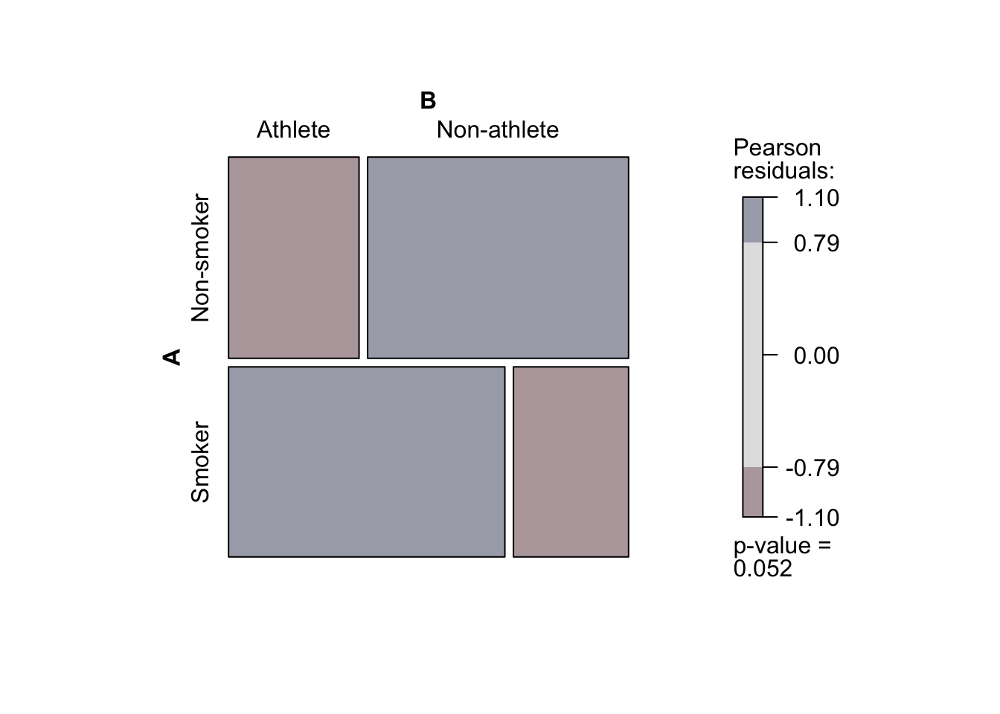

Class date: Oct 29, 2026
Based in part on lecture notes by Prof. Byoungkwan Lee and 이병관 (2023). 사회과학 연구자를 위한 R을 활용한 기초 통계. 한양대학교출판부.
5.5.1 Pearson’s \(\chi^2\) 적합도 검정 (\(\chi^2\) test for goodness of fit)
Exercise: 이 예제 데이터는 기혼 여성의 노동 시장으로의 통합을 다룬 연구 데이터의 일부로 원 데이터는 독일 5개 도시의 아이가 없는 223쌍의 신혼부부들의 총 13개의 가사 노동 분담에 대한 데이터를 담고 있다. 응답자들은 각각의 가사 노동에 누가 더 책임이 있는지를 응답하였다. 예제로 사용된 데이터는 13개의 가사 노동의 종류와 가사 노동을 담당하는 4개의 주체로 구성되어 있다.
\(H_{0}:\) 가사 노동을 담당하는 각 주체의 가사 노동에 대한 책임은 동등하게 분포되어 있을 것이다.
\(H_{A}:\) 가사 노동을 담당하는 각 주체의 가사 노동에 대한 책임은 동등하게 분포되어 있지 않을 것이다.
Chi-square goodness of fit test was conducted to confirm the difference between the expected frequency and the observed frequency of household task responsibility for each entity. The result showed that the observed frequency differ by each entity responsible for household task, \(\chi^2\)(3) = 52.62, p < .001. The effect size for this analysis was found as medium (Cohen’s \(\omega\) = .30).
5.5.2 Pearson’s \(\chi^2\) 독립성 검정 (\(\chi^2\) test for independence)
Exercise: Arthritis 데이터는 특정의 처치가 관절염(arthritis) 환자의 개선에 긍정적인 영향을 미치는지 여부를 파악하기 위한 임상 결과를 담고 있다. Arthritis 데이터 셋은 84개의 관찰치와 5개의 변수가 있는 데이터 프레임으로 구성되었다.
\(H_{0}:\) 모집단에서 처치의 유무는 환자의 관절염 개선과 독립적일 것이다. 즉, 모집단에서 처치의 유무는 환자의 관절염 개선과 유의적인 관련이 없을 것이다.
\(H_{A}:\) 모집단에서 처치의 유무는 환자의 관절염 개선과 독립적이지 않을 것이다. 즉, 모집단에서 처치의 유무는 환자의 관절염 개선과 유의적인 관련이 있을 것이다.
Chi-square independence test was conducted to confirm the relationship between a new treatment and improvement of the patient’s arthritis. The result showed that there is a significant difference in improvement between the treatment groups, \(\chi^2 (2, 84) = 13.05, p < .01.\) In addition, Cramér’s \(V\) was 0.394, which indicated that there was a large level of correlation. Thus, based on these results, we can conclude that the treatment provided has a significant impact on the improvement of patients’ arthritis.
5.5.3 Fisher’s exact test
Exercise: 흡연과 전문 운동선수 사이에 통계적으로 유의한 연관성이 있는지 여부를 확인하는 2×2 분할표를 만들어 Fisher’s exact 검정을 수행해보자. 2×2 분할표로 흡연 여부는 “Smoker”와 “Non-smoker”, 전문 운동선수 여부는 “Athlete”와 “Non-athlete”로 총 35명에 대한 데이터가 코딩되었다.
\(H_{0}:\) 흡연과 전문 운동선수 사이에 통계적으로 유의한 연관성이 없을 것이다.
\(H_{A}:\) 흡연과 전문 운동선수 사이에 통계적으로 유의한 연관성이 있을 것이다.
Loading and exploring data
dat <-matrix(c(6,12,12,5), nrow=2, byrow=T, dimnames=list(c("Non-smoker","Smoker"), c("Athlete","Non-athlete")))dat
Athlete Non-athlete
Non-smoker 6 12
Smoker 12 5
mosaic(dat, gp = shading_max)

Conduct \(\chi^2\)-test
chisq.test(dat) #Yates' continuity correction
Pearson's Chi-squared test with Yates' continuity correction
data: dat
X-squared = 3.4808, df = 1, p-value = 0.06208
fisher.test(dat)
Fisher's Exact Test for Count Data
data: dat
p-value = 0.04371
alternative hypothesis: true odds ratio is not equal to 1
95 percent confidence interval:
0.03888003 1.05649145
sample estimates:
odds ratio
0.2189021
library(exact2x2)fisher.exact(dat, alternative ="two.sided")
Two-sided Fisher's Exact Test (usual method using minimum likelihood)
data: dat
p-value = 0.04371
alternative hypothesis: true odds ratio is not equal to 1
95 percent confidence interval:
0.0435 0.9170
sample estimates:
odds ratio
0.2189021
Calculate effect size
library(psych)psych::phi(dat)
[1] -0.37
library(DescTools)DescTools::Phi(dat)
[1] 0.372549
Report the result of \(\chi^2\)-test
Fisher’s exact test was conducted to confirm the relationship between smoking status (Smoker vs. Non-smoker) and athlete status (Athlete vs. Non-athlete). The result showed that there is a significant relation between smoking status and athlete status, p = .043. In addition, phi coefficient was -0.37, which indicated that there was a medium level of correlation.